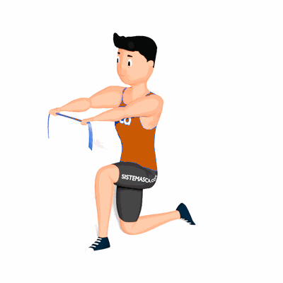

Afundo e Rotação de Tronco com Faixa Elástico

O exercício irá trabalhar o equilíbrio e estabilidade de core, além de ombros e toda musculatura de membros inferiores.
Ficha Técnica
Tipo: Funcional
Grupo Muscular: Abdome
Aparelho: Nenhum
Músculos: Nenhum
Como realizar
- Segure uma faixa elástica pelas extremidades;
- Projete uma das pernas a frente e realize o avanço. Desça o tronco numa posição vertical, com um alinhamento de pernas num ângulo de 90°;
- Com as pernas o mais próximo do solo, estenda os braços na linha dos ombros;
- Vire o tronco para o lado da perna que está à frente, realizando uma rotação de tronco e junto estique o elástico abrindo os braços na horizontal;
- Mantenha-se na posição de afundo e repita os movimentos do tronco e braços;
- Ao finalizar as repetições, inverta a posição das pernas e repita os movimentos.
 RC STORE
RC STORE